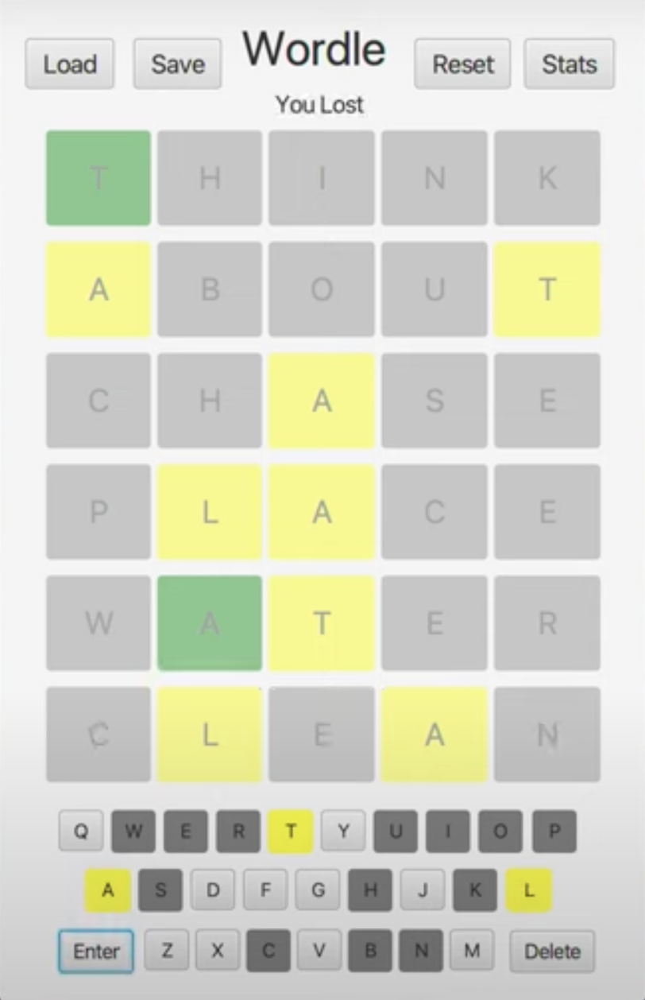
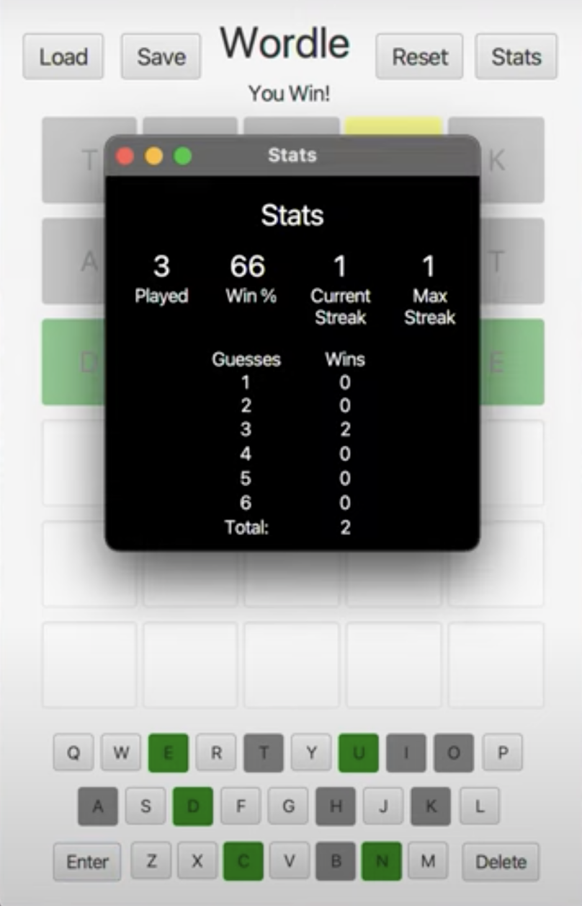

My Portfolio
Wellness Fargo:
During my internship at Wells Fargo, my team and I were tasked to develop an internal facing application that worked to increase employee morale and team chemistry through fitness challenges that employees can compete in. With this challenge in mind, we developed Wellness Fargo, an online platform for all Wells Fargo employees that promotes healthy lifestyles. Managers can create challenges and assign employees to teams to compete in these challenges. For example, an executive can challenge the Wealth Investment Management, Corporate Investment Management, Audit, and Commercial Banking teams to see which team can get the most steps in February. Employees can log into their accounts, upload data, and track progress on challenges. Tech-stack: Orchestra, Angular, Typescript, Springboot, H2-SQL, HTML, and CSS




Unlimited Wordle:
Worldle is a puzzle game where players have six attempts to guess a five-letter word. Once you input a guess, letters will change colors based on the letters of the correct word. If the letter is not in the word, the letter turns grey. If the letter is in the word but not in the correct location, the letter turns yellow. If the letter is in the word and the correct position, the letter turns green. This project takes the New York Times' Wordle game to the next level. Instead of having to wait every day for a new word, you can spend countless hours completing different Wordle puzzles. Users can also save their games and view statistics on their performances. Tech-stack: Java, CSS, JavaFX, and FXML
Got-to-Go:
Public restrooms can be quite disgusting - sometimes so bad that you would rather wait to relieve yourself. Wouldn't it be nice to find the cleanest on-campus restrooms near you when that urge comes? Introducing got-to-go, an online platform that allows users to find clean restrooms at Texas A&M near them. Simply look on the interactive to find restrooms in your area. Here you \can see reviews from other users allowing you to gauge which restroom is best for you. Once you're done you can leave a review sharing your experience. (Work in progress) Tech-stack: React, MongoDB, HTML, and CSS